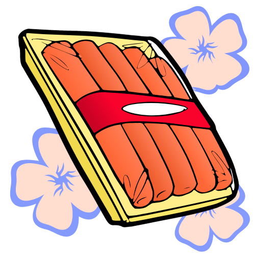

When it comes to sausages... we take the steak!
ABOUT US
Our Story
Founded in 1701, the Vegetarian Sausage Shoppe was the brainchild of late-in-life vegetarian chef Mystique Klamp and her beloved schnauzer Treetop. From the comfort of Mystique's homely kitchen, friends and family gathered happily to offer their feedback, and a collection of enduring recipes was born that formed the basis of some of the VSS's most popular products today.
From these humble beginnings, over the years Mystique has expertly trained a cadre of Vegetarian Sausage Chefs - masters of their craft who continue to innovate in the VSS Test Kitchens.
BREAKING!
Following months of controversy, government officials and unions alike have confirmed that, yes, 2025 will be the Year of the Sausage!

Products
From the bovine to the ridiculous, once you try our divine mock-meats you'll never look back. Order now to ensure you'll hit the ground running at the dawning of the Year of the Sausage.

Sumptuous, mouth-melting vital wheat gluten kneaded with only the finest tinned legumes.

Ready to be the most popular person at the barbecue, provided it's a vegetarian barbecue?
Our Story
Founded in 1701, the Vegetarian Sausage Shoppe was the brainchild of late-in-life vegetarian chef Mystique Klamp and her beloved schnauzer Treetop. From the comfort of Mystique's homely kitchen, friends and family gathered happily to offer their feedback, and a collection of enduring recipes was born that formed the basis of some of the VSS's most popular products today.
From these humble beginnings, over the years Mystique has expertly trained a cadre of Vegetarian Sausage Chefs - masters of their craft who continue to innovate in the VSS Test Kitchens.
BREAKING!
Following months of controversy, government officials and unions alike have confirmed that, yes, 2025 will be the Year of the Sausage!

Products
Sumptuous, mouth-melting vital wheat gluten kneaded with only the finest tinned legumes.

Ready to be the most popular person at the barbecue, provided it's a vegetarian barbecue?